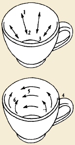

Гадание
на кофейной гуще — один из наиболее известных способов предсказаний.
Практически нет человека, который бы не слышал или не читал о нем. Но
узнать свою судьбу, предначертанную символами в кофейной чашке,
удавалось немногим.
Итальянцы утверждают, что именно они в XVIII веке разработали
методику гадания на кофейной гуще и составили список используемых в нем
символов. Причем они уверены, что ни одно верное предсказание не
обходится без вмешательства самого дьявола.
Процедура гадания в те далекие времена мало чем отличалась от
современного ритуала. В кофейник насыпали молотый кофе, заливали его
водой, ставили на огонь и доводили до кипения, произнося при этом
магические слова: «Aqua boraxit vinias carajos». При помешивании
закипевшего кофе несколько раз повторяли: «Fexitur et patricam
explinabit tornare». Потом кофе сливали, а чашку с оставшейся гущей
переворачивали на белое неглазурованное блюдце со словами: «Нах
verticaline, pax Fantas marobum, max destinatus, veida porol».
Считалось, что не стоит верить предсказаниям гадалки, которая либо не
знает этих магических слов, либо забывает произносить их в нужный
момент.
Итак, для гадания необходим минимум предметов: фарфоровая кофейная
чашка, желательно светлая, окрашенная в один цвет, и натуральный кофе
(растворимый для этих целей не подходит). Лучший напиток для гадания
получается при заваривании двух столовых ложек кофе грубого помола и
одной ложки кофе тонкого помола на чашку. Роль оракула выполняет осадок,
образующийся на дне чашки после того, как кофе будет выпит человеком,
желающим узнать свою судьбу.
Итак, перед тем как приступить к гаданию, надо сосредоточиться и
четко сформулировать вопрос, ответ на который составляет смысл
переживаемого момента. Затем надо взять кофейную чашку и налить в нее
только что сваренный кофе. Дать кофе отстояться в течение трех-пяти
минут и выпить, но не до конца — на дне чашки должна остаться примерно
столовая ложка жидкости.
Взять чашку за ручку в левую руку и, еще раз сосредоточившись на
своем вопросе, сделать ею три круговых движения по часовой стрелке,
чтобы осадок равномерно распределился по стенкам. Вращать чашку надо
довольно энергично, так, чтобы остатки кофе достигали ее краев.
Затем необходимо быстро опрокинуть чашку вверх дном на блюдце и
медленно сосчитать до семи. Перевернуть чашку и внимательно всмотреться в
образовавшиеся на ее стенках пятна. Для предсказания важно, как они
расположены: от верхнего края чашки к нижнему, слева направо, справа
налево или на дне.
По пятнам на стенках чашки можно судить о будущих событиях, а пятна
на дне рассказывают об уже прошедших. Чем дальше пятна расположены от
верхнего края чашки и чем ближе они к центру, тем о более отдаленных
событиях они говорят (см. рисунок).
Полную картину предсказания может дать тщательно проведенный анализ
не менее пяхи пятен. В.основе этого вида гадания лежат «есоциативные
связи, возникающие между формой пятна и соответствующим понятием или
объектом материального мира.

Значение пятен в зависимости от их расположения:
1.настоящее или ближайшее будущее;
2.более отдаленное будущее;
3.область несчастливых предзнаменований;
4.спрашивающий;
5.то, что скоро уйдет из жизни спрашивающего или значительно отдалится от него;
6.то, что приближается и скоро станет часью жизни спрашивающего.
Значения фигур, которые могут быть увидены в кофейной чашке,
приводятся ниже. Но хочется предостеречь начинающих ворожей: отнеситесь к
предлагаемому списку с некоторой долей скепсиса. Само собой разумеется,
что он не в состоянии отразить все многообразие событий, которые могут
случиться в жизни человека. Поэтому только опыт и практика помогут
правильно определить значение той или иной фигуры, а также, что более
важно, смысл их комбинаций с учетом взаимного расположения внутри чашки.
Значения фигур
Люди и части тела
Глаза — вас ждут перемены в жизни.
Голова — в близком окружении есть молодой человек, который окажет благотворное влияние на вас и вашу дальнейшую судьбу.
Голова в профиль — вы находитесь под надежной защитой.
Голова женщины - любовь.
Голова мужчины — разлука с любимым.
Голова, повернутая вверх, — у вас имеется сильный и влиятельный покровитель.
Крест — плохое известие (крест сплошной); счастливая семейная жизнь (крест с черным контуром, но белый внутри).
Круг — вы прекрасно ладите с окружающими (круг замкнутый); вас ожидает новое знакомство (круг незамкнутый).
Линия — приключение (зигзаг); обида, проблемы в личной жизни (линия
пересекается прямыми или ломаными линиями); счастливая и беззаботная
жизнь (прямая и длинная линия); болезнь, убытки, нерешительность,
неопределенность (прерывистая линия).
Косые линии — предостережение о грядущей опасности.